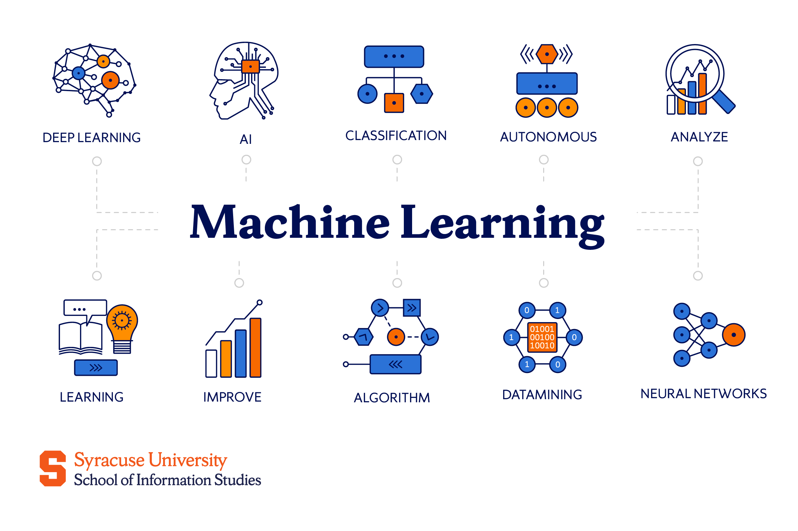

Undergrad Projects
Sentiment Analysis using Twitter Data
Developed a comprehensive sentiment analysis system using Twitter data with data preprocessing, model training, and evaluation for sentiment classification. Implemented using Jupyter Notebook with Kaggle dataset.
Python
NLTK
Pandas
Matplotlib
Seaborn

Sign Language Detection Using Machine Learning
Developed a real-time sign language detection system using computer vision and machine learning techniques.
Python
TensorFlow
OpenCV
NumPy
Arrhythmia Detection Using Deep Learning
Built a deep learning model to detect cardiac arrhythmias from ECG signals with high accuracy.
Python
TensorFlow
Keras
Pandas

Microcontroller-Based Calculator
Designed and implemented a calculator system using AT89C51 microcontroller and assembly language.
Assembly
AT89C51
Embedded Systems